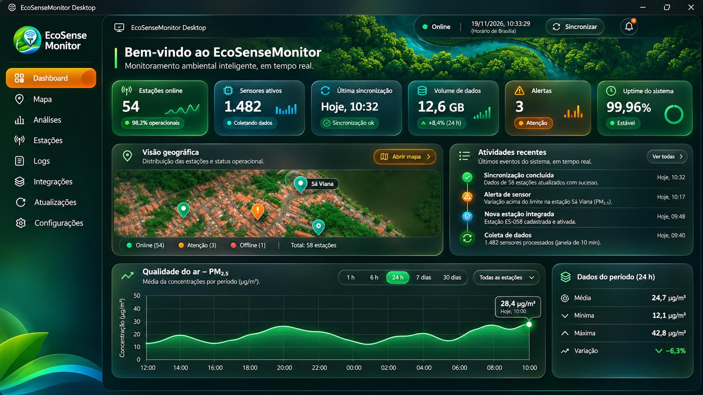
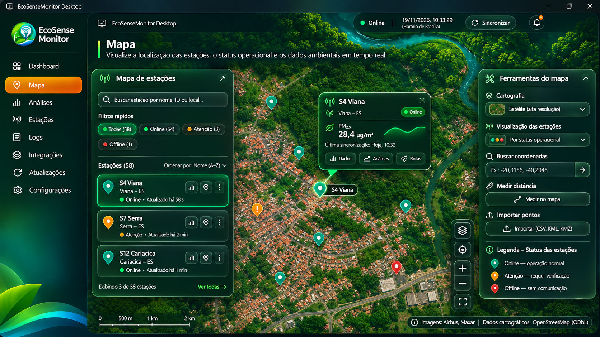
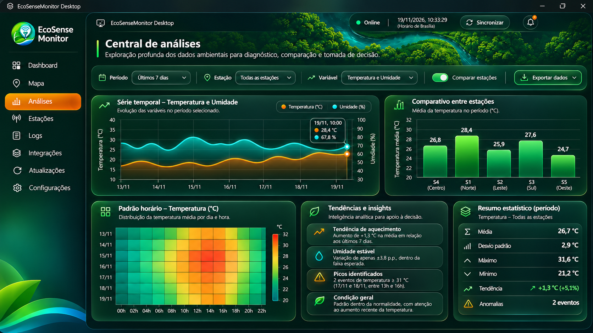
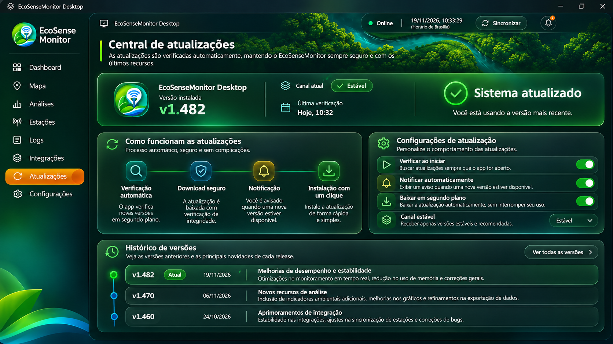

Inteligência ambiental estação por estação.
Uma plataforma modular, reprodutível e de baixo custo para monitorar condições atmosféricas, integrar estações, visualizar informações geográficas e analisar séries temporais.
A versão web não exige instalação Windows. Leituras reais dependem de estação configurada e fonte de dados acessível.

Design premium. Dados verificáveis.
Uma nova experiência em Liquid Glass: telas com navegação consistente, cartografia ampla, gráficos científicos e central de integração. As imagens são referências visuais; métricas exibidas nos conceitos não representam medições reais.
Dashboard inteligente
Indicadores, eventos e séries temporais em uma área de trabalho organizada.

Mapa interativo
Localizações e ferramentas geográficas para a rede de estações.

Análises científicas
Séries temporais, comparações, variabilidade e estatísticas.

Atualizações
Publicação contínua da interface web sem executáveis não assinados.
O essencial para acompanhar sua rede
Identificadores, proprietários, coordenadas geográficas e endpoints de telemetria.
Camadas satélite, topografia e OpenStreetMap com marcadores de estações cadastradas.
Médias, extremos, desvio padrão, comparações e padrões horários a partir de medições registradas.
Importação CSV/JSON, download de GeoJSON e backups locais.
Conexão com Google Apps Script através de API AWS e consulta externa Open-Meteo.
Interface adaptada para desktop e celular, preparada para backend multiusuário.
Monitoramento local, modular e reprodutível.
O EcoSenseMonitor foi concebido como apoio à observação atmosférica distribuída. Sensores conectados a estações locais podem complementar fontes meteorológicas regionais, com atenção à rastreabilidade, qualidade dos dados, autonomia dos dispositivos e representação espacial.